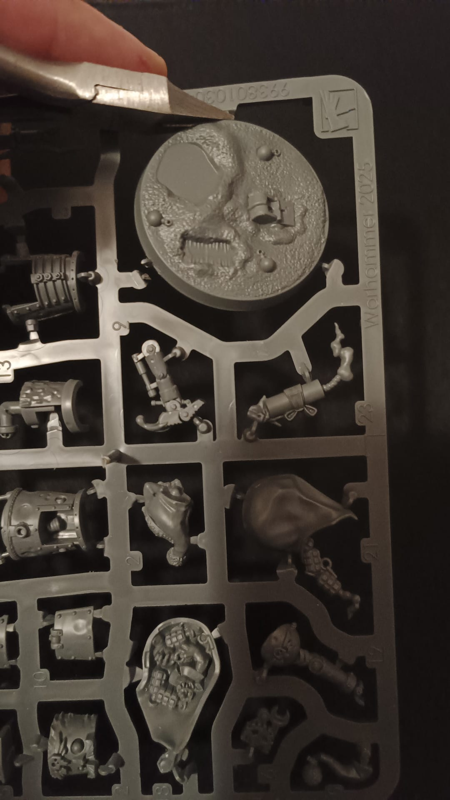
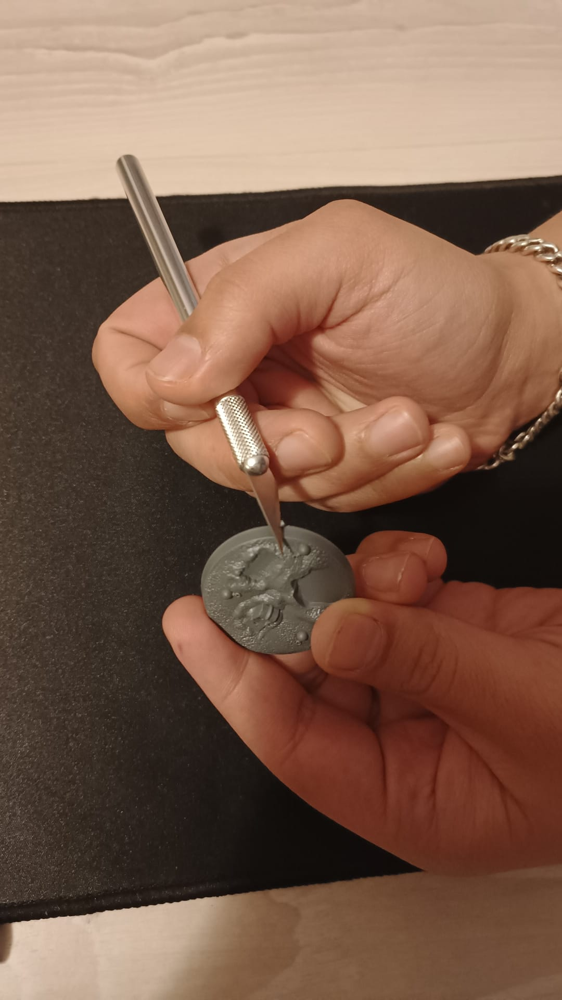
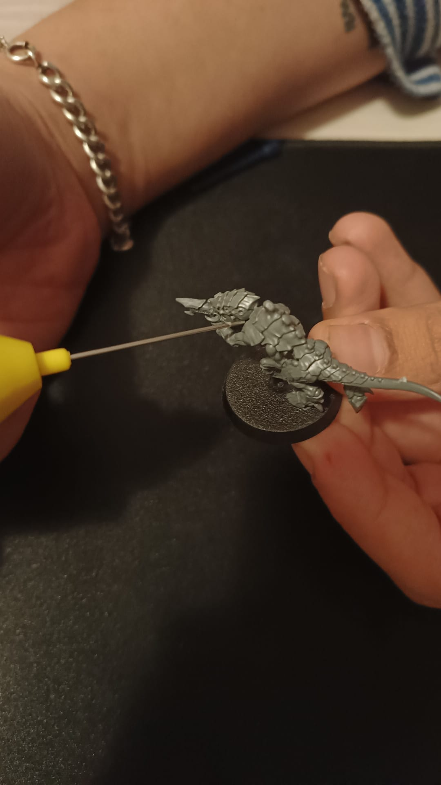
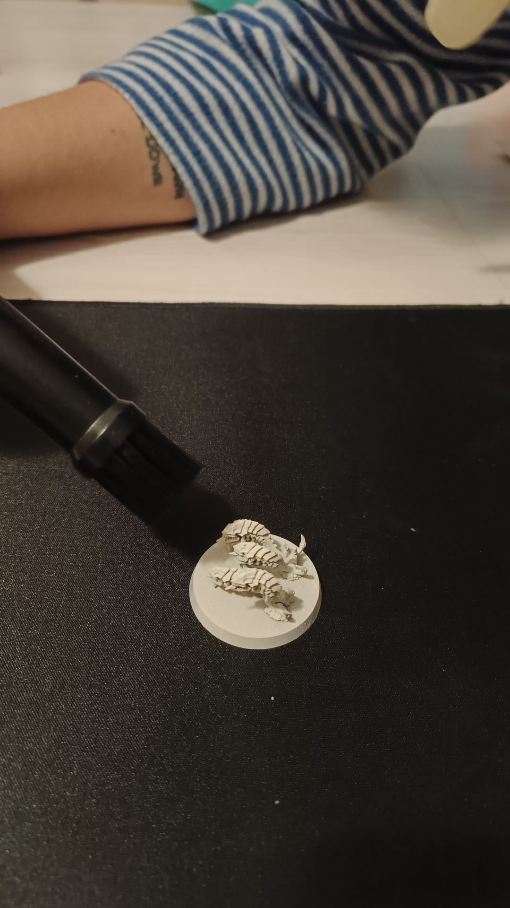
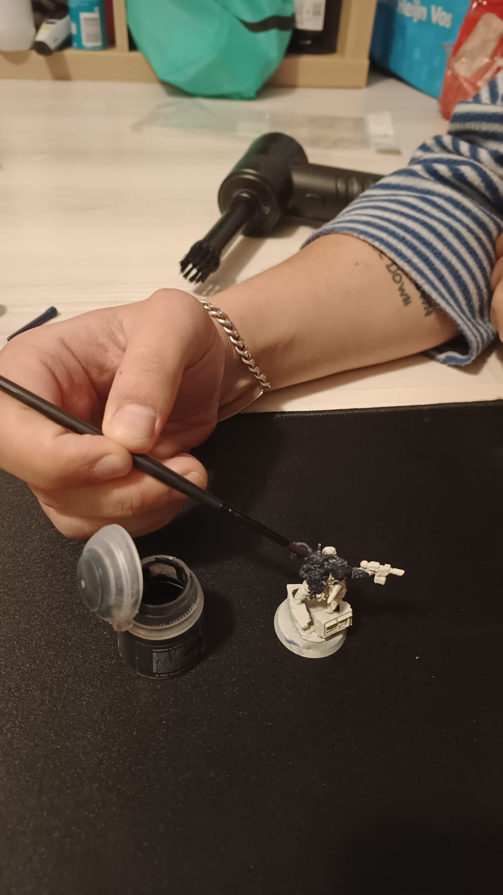
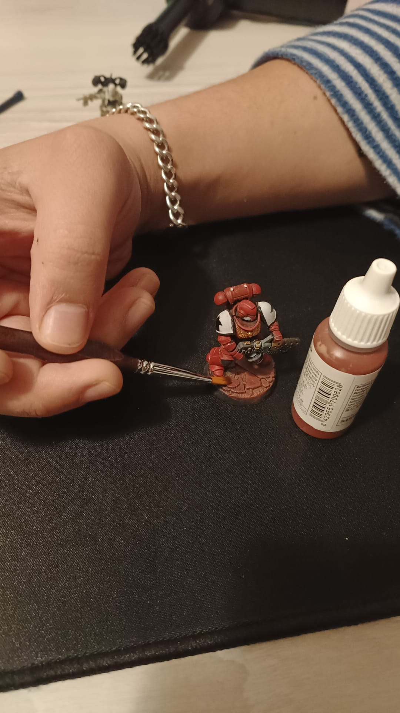
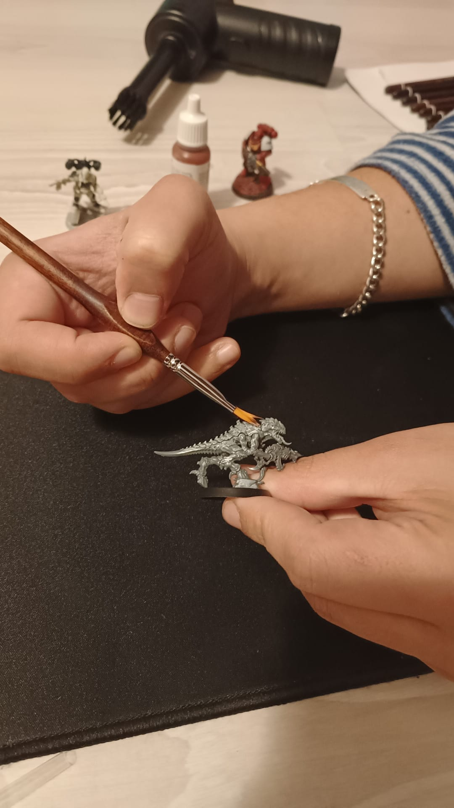
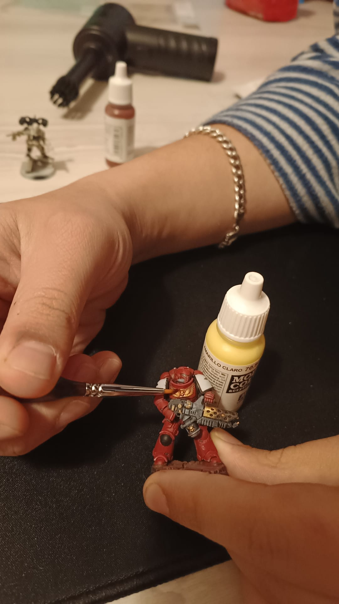
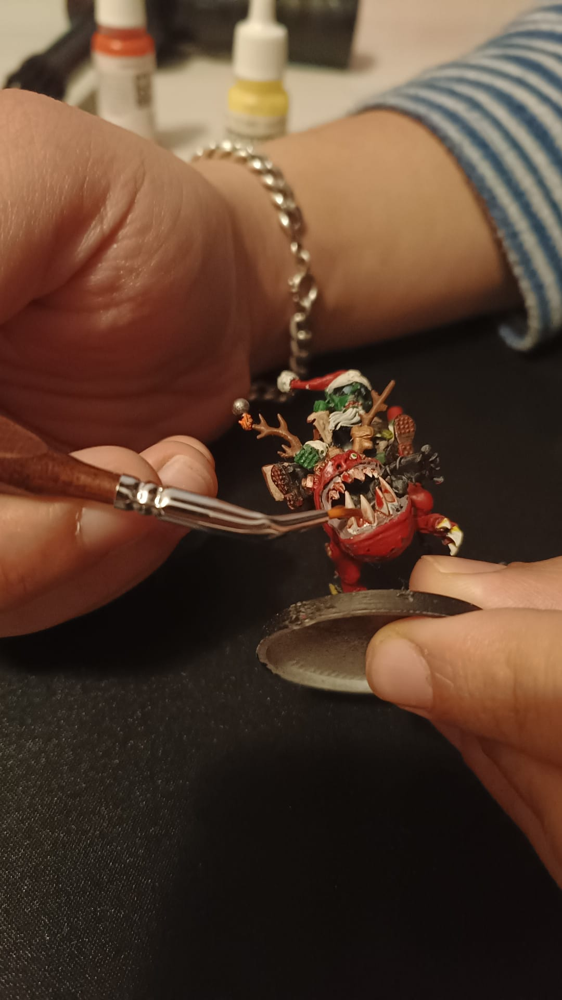

Prepare your workspace with:
- A clean, flat working surface
- Good lighting or a desk lamp
- Your miniature and paints
- Brushes, water cup and palette
- Paper towels for cleaning brushes
- Clippers and hobby knife for preparation
Your First Miniature
Ready to paint your first miniature? Follow these simple steps to assemble, prepare and paint your model, even if you're a complete beginner.
Before painting, prepare a clean and comfortable workspace with enough lighting and room for your materials. Having everything ready beforehand makes the process easier and more enjoyable.
First, carefully remove the miniature parts from the sprue using clippers. Use a hobby knife or file to remove leftover plastic and smooth the edges. Assemble the pieces with the appropriate glue and let them dry. Once assembled, apply a thin layer of primer. Primer helps the paint stick to the miniature and creates an even surface.

Remove parts from the sprue.

Clean mould lines and rough edges.

Assemble the miniature with glue.

Apply a thin, even layer of primer and let it dry before painting.
Now it's time to bring your miniature to life with colour! There are several techniques you can use to add shadows, highlights and details. Start with the basics and gradually experiment with different methods as you gain confidence.

Apply the main colours in thin, even layers.

Add shadows by letting darker paint settle into details.

Highlight raised areas using very little paint.

Build up lighter shades to create depth.

Add lighter colours to edges and raised surfaces to make details stand out.